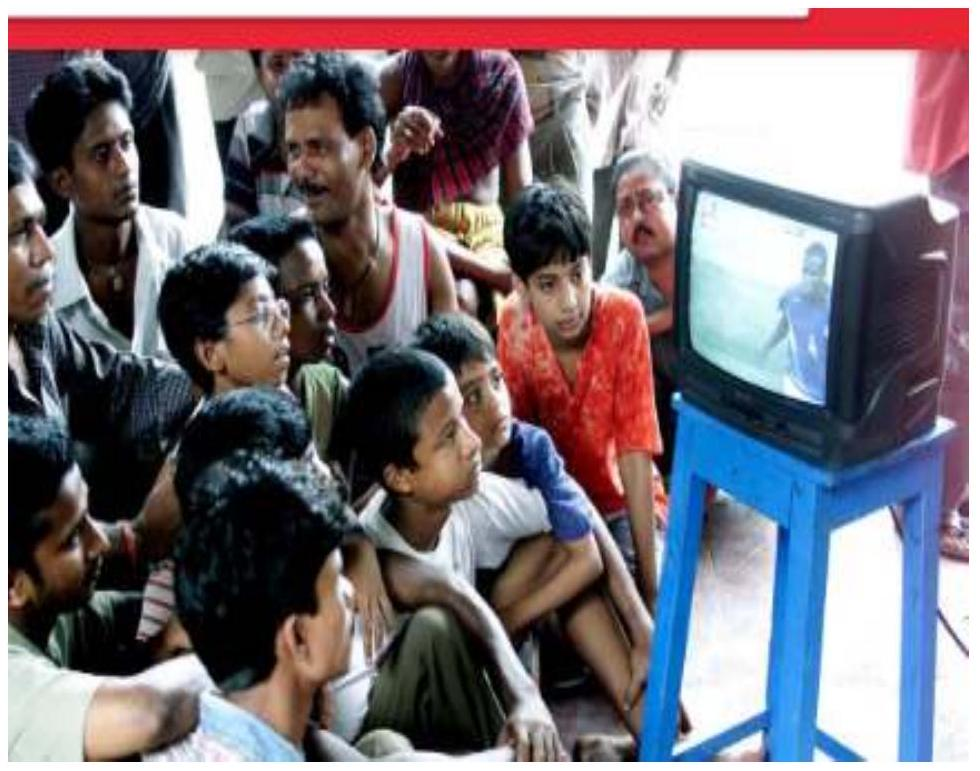

STRAND 6: TEACHING METHODS
Facilitator's Notes
Introduction to teaching
Teaching -it is the social process which is aimed at influencing changing the behaviour of another person positively.
Teaching methods-These are the techniques employed by a teacher to facilitate the instructional process.
Forms / dimensions of Teaching
- Formal: is systematic deliberate direct and consciously imparted by a specialist.
- Informal: Is the teaching one gets outside the classroom. Here success occurs when opportunity and preparation meet.
Principles of teaching
- Active involvement of the learner
- Motivation to enhance learning
- Concreteness to enhance understanding of concepts and ideas
- Focusing attention on individual learner's needs
- Cooperation in the teaching learning process in the classroom
- Acquiring relevant knowledge about the learners and using it to inform on cause design and classroom teaching
- Aligning the 3 major components of instruction i.e. the learning objectives, assessments and instructional activities
- Articulating explicit explanations regarding leaning objectives and policies
- Prioritizing the knowledge and skills one chooses to focus on
- Progressively refining the course/subject based on reflection and feeding
Qualities of an Effective Teacher
- Has good knowledge of the subject matter
- Has patience with students of different categories e.g. backgrounds discipline, maturity
- Intellectually curios i.e. naturally driven by the interest in keeping abreast of changes in his/her field
- Confident in his/her abilities
- Achievement oriented i.e has clear thoughts on the objectives to be achieved and what has to be done to realize them.
- Plans and sticks to the plans. This goes deeper than just rigidly following a course syllabus
- Awareness of what happens in the dawn and in adjacent hallways e.g. being able to stop nonsense before it starts and keeps students on track
- Mentorship i.e. teachers often serve as mentors to their learners. The desire to influence learners positively is a core motivation of many teachers.
- Maturity i.e. insightful teachers are able to sense emotional changes in learners and respond to them appropriately
- Community Involvement i.e. through contact with parents, administrators, and community leaders
- Organization i.e. able to manage learners' multiple personalities and organize his/her subject matter for maximum benefit of the learners
- Visionary i.e. should be their learners illuminators to provide them not only with interesting and useful materiel, useful materials, but also with visions of where they might end up if they learn well
Approaches to Teaching
- Teacher Centered Approach e.g. Lecture, Demonstration, Story telling, Educational Broadcast and Practical.
- Learner centered Approach e.g. Discussion, Field Trip, Question & Answer, Role play, Problemsolving.
Choice of Teaching Methodology
The choice of given teaching methodology is guided by:
- Set instructional objective
- Size of the Class
- Level of the learners
- Available teaching & learning resources
- Nature of subject content
- Time available
- Ability of the learner
- Readiness and maturity of the leaner
NOTE: The teaching methodology adopted should be able to:
- Arouse develop and sustain leaners interest
- Develop a positive attitude in the leaner towards the subject
- Enhance creativity and active leaner participation
- Stimulate learner's curiosity for further learning
- Promote comprehension and retention of content
COMMON METHODS OF TEACHING
1.Lecture Method/chalk and talk method
This involves a teacher delivering verbally the lesson's content to the learners. It involves explaining, developing and evaluating idea and concepts and then summarizing the main points. It is largely teacher-centred
It is appropriate when used to:
- Introduce a topic
- Focus attention
- Give instructions
- Help learners to synthesize important information
- Summarize a discussion lesson
- Explain activity
- Develop listening skills in the learner
Effective use of the Lecture Method
- Have an introduction that captures the learner's attention and interest
- Take into account the instructional objectives to be achieved
- Use the appropriate language
- Avoid lecturing directly from text books
- Use appropriate voice projection, modulation and pace
- Ensure adequate grasp of the lesson content
Advantages/Merits of Lecture method
- Efficient, cheap way of conveying a topic to a large audience/group
- Factual material is conveyed in a direct logical manner
- Large amount of content is covered in a short time.
Disadvantages/Limitation of Lecture method
- One-way communication with no active learner participation (passive)
- Difficult to maintain leaners' interest
- Does not appear to be effective in changing the teacher's performance
- Requires proficient oral skills
- Learning is difficult to gauge
- Not appropriate for very young children e.g those in primary school
- Its effectiveness is highly related to time and scope of content
2. Discussion Method
This is a verbal interaction among learner with the teacher as the facilitator. It involves exchange and sharing of ideas, experiences, facts and opinion on given topics. Discussions may be:
- Whole class or Small group
- Formal or informal
Discussion method is suitable for:
- Clarifying concepts and ideas
- Building consensus
- Gathering opinion and ideas from other
- Clarifying attitudes and values
Principles of Effective Discussion
An effective discussion requires sufficient preparation by both the teacher and the learner
Before the Discussion
The Teacher should:
- Identify the topic of discussion
- Form the desired Groups
- Provide adequate information on the topic and assign specific tasks
During the discussion
The Teacher should:
- Guide the discussion by asking leading questions
- Direct the discussion, clarify any Misconceptions and verify facts
- Encourage active learner participation
- Maintain order among the leaners
- Take a facilitative role in the discussion
The Learner Should:
- Observe the rules of the discussion
- Keep to the topic of discussion
- Participate in the discussion without monopolizing it
- Support or object arguments and opinions with facts
- Listen actively and reflectively
- Take notes from the discussion
After the Discussion
- The group leaders should report findings to the whole class
- The teacher and learner to correct misconceptions
- The teacher to summarize the views from the learners to arrive at a logical conclusion
Advantages/Merits of Discussion
- Emphasis is on learning/leaner activity thus more effective than lecture
- All learners participate hence a sure way of learning
- Leads to development of democratic way of thinking i.e. everybody cooperates in the discussion and the ideas & opinions of other:
- Trains leaners in reflective thinking hence leads to deeper understanding of the problem under discussion
- Trains learners in self-expression
- Inculcate spirit of tolerance in the learners. i.e. they learn to discuss and differ and tolerate the views of others even if they are unpleasant or contradictory to each other
- Discussion makes learning interesting
Disadvantages/Limitations of Discussion
- All types of topics cannot be taught by discussion method
- The method cannot be used for teaching small children
- Some learners may not take part while other may try to dominate
- Some learners may not follow the discussion rules
- The teacher may not be able to guide and provide true leadership in the discussion
3. Question & Answer Method (Questioning Technique or Socratic Method)
The teacher asks questions to elicit answers from the learners on a specific topic to determine what needs to be taught
It aims at determining the knowledge and perception of a learner on a given topic at the beginning during and at the end of a lesson
- It enables teachers to assess the leaning process
- It is used to reinforce other methods and techniques of teaching. and should therefore not be used in isolation
- It enables the learner to develop skills in questioning, answering questions, taking and making notes, synthesizing ideas from the teacher end thinking critically and creatively
Principles of Effective Questioning
- Questions should be well prepared prior to the lesson
- Ask clear and relevant question
- Distribute the questions evenly among the learners
- Ask the question first pause and name the respondent
- Provide appropriate reinforcement to the respondent i.e. acknowledge the learners attempts to answer the questions, whether the response is correct or incorrect
- Encourage learners to ask questions
- Avoid asking leading questions e.g. "Nairobi is the capital city of Kenya. Isn't it?"
- Focus on open-ended question where possible
Characteristics of Good Questions
- Clear precise, brief and direct
- Formulated to challenge and stimulate the learner's thoughts
- Suitable for the age, abilities and interests of the learners
- Within the learners' experiences and language they can understand
Points to Consider When Formulating Questions
- Start questions with interrogative words e.g. "Who, Why,What, When and How. Avoid the interrogative words being at the end
- Avoid asking leading questions e.g. "Nairobi is the capital city of Kenya Isn't it?"
- Avoid double-bowled questions e.g. "How big is Webuye and how far is it from Bungoma?"
- Avoid questions that encourage guessing e.g. "Is mercury a solid or a fluid?"
- Avoid YES or NO questions
Points to Consider When Asking Questions
- Call the respondent's name
- Listen to the answer comment and give the learner a feedback
- Distribute the questions as widely as possible among the learners giving chance to all.
- Prepare key questions in advance
- Ask questions in a natural, friendly and conversational manner
- Allow learners to complete their answers without interruptions
- Encourage learners to ask questions and respond to them with logical reasons, tact and patience.
Advantages/Merits of the Question & Answer Method
- Helps the teacher to find out if the learners had prepared for the lesson or not
- It drills or gives practice in what has been learned
- Guides, leads and motives the learner
- Helps the teacher to evaluate the level of understanding of learners
- Develops learners' ability to think or explain causes, effects and purposes of thing
- Helps learner to organize material learnt
- Emphasizes important points
- Helps learners to discover their interests or talent
- Improves appreciation of the topic
- Promotes self-expression in the learners
- Reveals the mental processes of the learners
- Shows agreement or disagreement with concepts, opinions or views
- Establish rapport with the learners
- Helps diagnose learners with difficulties in and out of the classroom
- Maintains the attention of the wondering minds
- Increase the amount and quality of participation of learners
- Promotes further knowledge and deeper understanding
- Motivate learners especially when they give correct answers that are acknowledged
Disadvantages/Limitations of the Question & Answer Method
- Encourages the teacher to focus on a few learners who are able to quickly answer questions
- Discourages slow learners from participating in the lesson for fear of making mistakes
- May cause some learners to lose self esteem and self-confidence
- Some teachers may not be skillful at probing questions to get desired responses
- Increases the possibility of poor class control due to chorus answers
- Teachers with poor communication skills any out use it effectively
4. Project Method / assignment method
A project is an activity carried out by an individual learner or group of learners in a more naturallike manner and in an environment that is freer than that of am everyday classroom
A project is usually under the guidance and supervision of a teacher who ensures that the project accomplishes a definite and attainable goal. Learners are given freedom to investigate and gather information for their project.
A project is based on objectives which require some time to be achieved. It requires skills, effort and careful planning. It permits learners to identify a problem, gather information, analyze it and draw conclusion. It supplements the normal classroom interactions and offers an Opportunity for individual learning and self-fulfillment
Qualities of a Good Project
- Relevant and focused on instructional objectives or topic
- Challenging, interesting and appealing to learners
- Enhances application of knowledge and skills learned theoretically in class
- Provides an opportunity to demonstrate originality, creativity and critical thinking
Preparation of a Project
- Organize learners into non-ability or mixed ability groups
- Assist learners to identify and define the project to be studied
- Organize and plan the study project in a manner that will enable learners to collect relevant information
- Encourage the use of a variety of research methods such as interview, questionnaires and library study
- Provide reference books and other materials for learners to work with where necessary
- Seek authority of resource person to be interviewed and book the necessary appointment
- Lay emphasis on the form of presentation of the information gathered or solution developed
- Check the progress of each group to provide guidance, particularly to non starters
Advantages/Merits of the Project Method
- Leaners develop skills on how to organize and any out individual or group work without the teacher's constant supervision
- Promote cooperation and team spirit among learners
- Provides a natural approach to learning as it relates the curriculum to real life situations
- Gives the teacher an opportunity to show the learner the interrelationships between subjects
- It captures the leaners' enthusiasm by stimulating their initiative end spirit of inquiry
- Fosters good teacher-learner and learner-teacher relationships
- Enhances the development of leadership politics in learner's
- Encourages creativity and sustains motivation
- Encourages freedom of expression
- Applies the philosophy of 'Learning by Doing', thus making learning learner-centred
- Give learners experience in planning and organizing and a sense of achievement.
Disadvantages of the Project Method
- It is time-consuming as it takes long to complete and interfere with other lessons
- Not all leaners in a group participate and contribute to the attainment of the project objectives
- It is difficult to evaluate the learners' individual performance
- It is not easy to maintain order and discipline among learners while they are carrying out their project
- Requires material and other resources which may be costly to acquire
- Scheduling a project can present problems if a teacher has only a few lessons per week e.g. 2 or 3
- Fails to transmit knowledge to the learners in a systematic way. Instead it is gotten through sheer coincidence.
5. Demonstration Method
This involves the teacher showing and explaining a concept or a skill (how something is done) in a given topic.
It may be used for the whole class or part of the class depending on size of the class, available resources and space.
It is a more effective way of teaching than mere describing. The emphasis is on learning by observation followed by doing; hence drills and practice exercises are required. It enable the learners eventually be able to perform the activities on their own.
Demonstration may be used in various situations:
- To Show techniques-skills that are too difficult/complex for the learner to carry out.
- When resource: (materials and equipment) are inadequate, expensive or difficult to produce for individual use e.g. skills on administering first aid, baking bread or wine knot
- To Introduce the use of various teaching and learning resources
- When time for content coverage is limited
- To Amuse interest for further learning
- When it is dangerous for the learners carry out the activity
- To Introduce a topic or lesson
Guidelines for effective demonstration
The teacher should ensure that:
- Determine and analyze the lesson objectives
- All the required learning resource available, in writing and within reach
- He/she tries out/rehearse the demonstration before the lesson to determine the amount of time required and ensure familiarity with all the aspects of the demonstration
- Arrange the learners appropriately to ensure a clear view
- An appropriate pace is adopted depending on the level and ability of the learner and complexity of the content
- Learners with special needs such as the visually, the hearing and the physically challenged are well catered for during the demonstration.
- Prepare charts or chalkboard summary which learners can refer to during and after the demonstration
- Subdivide the demonstration into logical steps or stages
- Keep the demonstration simple and easy to understand
- Check learners understanding by being sensitive to their reactions
Advantages of Demonstration
- Trains learners to be good observers
- Enhances the formation of concepts and generalizations
- Has a high interest value when it involves the use of equipment and materials which may be new to the learners
- Economical in terms of time and money
- Effective fro introducing skills and concepts in learning
- Appropriate when learners need to learn how to use a piece of equipment
Disadvantage of demonstration
- Provides less opportunities for learners to discover concepts on their own
- Reduces active participation of learners
- Poses a problem of audibility and Visibility when large groups are involved
- It's difficult to evaluate the learners' understanding during a demonstration
6.Case Study Method / imaginary visits/ story telling
This is a true or imaginary/fictional excerpt that a teacher uses to describe a problem, a situation or character to a learner on a given lesson or topic.
A case study may present a Dilemma/puzzle that a learner is expected to resolve. If the case study is based on a true story, then it should be disclosed in the course of the study or at some point in the lesson.
It should be relevant to the subject or topic being taught.
Guidelines for the teacher in developing a case study
- Focus on the instructional objectives
- Provoke the learners' ability to solve questions
- Appeal to the learners' emotions
- Help learners to identify and internalize the concepts raised
- Help learners to apply the skills learnt to solve similar problems they may encounter
Advantages/merits of case study
- It develops the learners' skills, communication and critical drinking. It makes the subject relevant to real life situations
- Allows for the exploration of solutions to complex issues
- Encourages or simulates discussions
- Creates an existing atmosphere in the class which motivates the lumen to participate actively
- It facilitates development of analytical and problem solving skills.
- Promotes higher mention of what has been learned
Disadvantages/limitations of case study
- Learners may not see the relevance of the case study to their own situation
- Insufficient information can lead to inappropriate results
- It is not appropriate for young learners
- Sometimes it is not easy to identify a suitable case study.
- Time consuming especially during preparation and execution
- Expensive as it demands a lot of sources in addition to other related costs
- Learners may collect irrelevant information of various facts thus making valid generalization be rather limited.
7. Field Trip method/ educational trips/excursion
Field trip involves taking students outside the classroom setting to have first hand experiences of what happens in our environment or real life situations.
The method enables the students to make useful observations and collect information, which cannot be obtained within the classroom.
Experiences acquired during field trip are usually long lasting and cannot easily be forgotten by the students.
Examples of areas where students can undertake field trip include erosion sites, industries, oil spillage sites, mountains or hills, rivers, hospitals etc. A study of these phenomena will be more meaningful when students visit the affected sites than when discussed under the classroom setting.
Suggestions for the Effective Use of Field Trip
- The teacher should first discuss the idea of taking students on a field trip with the school authority for approval.
- Subsequently, she should write to the authority of the area to be visited for permission to visit, time of the visit as well as the date of the visit. Finally request for any written rules guiding the place.
- Before the trip the teacher should then discuss with the students concerning the trip, the aim of the visit, materials to take along ego pen, pencil, exercise book, ruler etc.
- Furthermore, the teacher should inform the students about the rules guiding the place, possible dangers, things to look out for as well as method of reporting their observations.
- The teacher should make sure that the field experience fits properly into the instructional sequence.
- The teacher should carry first aid kit along in case of any accidents involving students
- Ensure adequate arrangement for transportation in the case of trips involving long distances.
- After the trip, examine the students on the specimens and information collected from the trip. This has to be in connection with the report of the trip in order to facilitate retention of the experiences from the trip.
Advantages of Field Trip
- Field trip provides the students with the opportunity of having first hand knowledge of certain phenomena that occur in our environment.
- It helps to generate and sustain students' interest in the subject.
- With field trip, motivation to work is usually very high.
- It aids retention of information since the experiences are long lasting.
- Field trip can help students to develop interest in certain professions e.g. engineering, medicine etc.
- It helps to channel student's experiences towards one direction.
- Field trip helps students to understand man's relationship with his environment
Disadvantages of Field Trip
- If it is not well planned, it becomes a waste of time and resources.
- It is extremely tedious to carry out field trip especially when it involves long distance trip.
- In some situations, accident may occur in the course of a field trip.
- In most cases, field trip time encroaches into other lesson periods. This would likely result in conflict between the teachers involved if it is not properly handled.
- Field trip results in extra financial expenditure on the part of the school and students.
8. Experimentation method
Experimentation is a method of learning concepts through been involved in the process of investigation by doing practical activities.
Experimentation involves activity-oriented learning that helps learners to acquire important skills such as; observation, measuring, classifying objects or things, defining variable operationally, designing experiments, interpreting data, hypothesizing, predicting etc.
The process of experimentation takes place in three steps:
- Phase One: Pre- experimentation Session
- Phase Two: Experimentation Session
- Phase Three -Post experimentation session
a)Phase One: Pre-experimentation Session
This involves:
- Assembling in advance all the equipment andmaterials for the exercise.
- Checking if the materials are in good working condition.
- The experiment is trial tested by carrying it out first to ensure that it's achievable-This reduces errors which the teacher may have committed in the actual laboratory session.
- Arranging The sitting arrangements of students
- Setting The time to spend in carrying out the investigation
b)Phase Two: Experimentation Session
- During this session, the teacher will first of all interact with the students by telling them what to do, the purpose of the experiment, the procedure to be followed in carrying out the investigation as well as safety measures to be taken to avoid incidence of accident.
- While the students are now working with their equipment and materials, the teacher's duty is to be an overseer.
- He works round the class to make sure that all the students are following the procedure carefully.
- The teacher clarifies any doubt or problem arising from the students and by so doing gives them adequate encouragement and support in the learning process.
c)Phase Three: Post experimention session
- In this session, the teacher discusses the result of the investigation in order to clarify students who may be in doubt.
- He can assign marks to the work done by the students.
- The teacher can also summarize the process as well as the result of the investigation in the form of backboard summary.
- The students are allowed to clean up their tables and wash off equipment before leaving the laboratory.
Suggestions for the Effective Use of Experimentation
- Experiments should be based on students' background and availability of materials.
- The teacher should ensure that the time frame for the experimentation will be such that students will be able to achieve results at the end of the time.
- The language of instruction for any investigation should be very clear and within the child's chronological age.
- The teacher should make sure that the equipment for students are in good working condition and enough materials are available for all the students.
Advantages of Experimentation
- Experimentation enables students to have direct sensory experience
- Experimentation fosters opportunities for the acquisition of science process skills e.g. manipulation, measuring, classifying etc.
- It helps in the retention of information as the students interact with the scientific process.
- The uses of experiments help students to develop scientific attitude such as enquiry, curiosity, carefulness, objectivity, honesty etc.
- Experimental works help to stimulate and sustain student's interest in learning
- It aids students in problem solving and arriving at conclusions.
- It helps to increase student's ability towards critical thinking and acquisition of better understanding of knowledge
Disadvantages of Experimentation
- Experimentation in biology teaching is wasteful in terms ofresources to be used in carrying out the investigation unlike demonstration
- It is also time consuming in carrying out a single experiment. What the teacher can say in five minutes may take one hour to investigate
- It also exposes the teacher's ignorance on those areas he is not competent enough to handle.
- In experimentation, lack of background knowledge about the activities may make students to dislike the subject.
9.Role Playing
This is the process of assuming the nature, manner, behaviour, attitude, responsibility or authority of a post, persons or objects in a given situation.
Role playing is used in a variety of ways and for various purposes, it is used to resolve conflicts and settle problems as well as teach certain feelings of emotions which might be difficult for a teacher to express or demonstrate by himself.
10. Dramatization
This method is used by children in schools to convert facts or skills to be learnt into drama in order to make the learning of such facts or skills more interesting and realistic.
Dramatization enables the teachers to learn about the various maturity levels of the pupils in terms of their emotional, physical, intellectual and social development.

Advantages
- It affords pupils the opportunity to express themselves freely and happily
- It develops in them a sense of respect for the opinion of others
- It develops in them the attitude of cooperation in a groups
Disadvantages
- Requires alot of planning
- It's time consuming
- The costumes and relevant materials needed to enrich the play may be expensive to acquire.
11. Discovery Method
Discovery method is a teaching strategy which enables students to find the answers themselves. It is a learner centred approach hence it is called a heuristic method.
It is of two types;
- The guided discovery -teacher guides the students to discover for themselves solutions to given problems by providing them with general principles, but not the solution to the scientific problem.
- The unguided discovery-involves the students discovering for themselves both the general principles and solution to a scientific problem. It is sometimes called the pure discovery.
Advantages of Discovery Method
- Makes the student an active participant rather than a mere passive recipient.
- There is high retention of any information or knowledge so discovered will be increased.
- The training acquired in finding out things for oneself independently can be applied to new learning and problem solving.
- The joy in discovering something provides the students with intrinsic motivation
- Helps learning through real life situations
- Helps students develop manipulative skills and attitudes which constitute one of the fundamental objectives of science teaching.
- It encourages analytical and synthetic thought as well as intuitive thinking.
Disadvantages of Discovery Method
- It is time consuming and progress is comparatively slow. Apparatus have to be set up and result(s) of the investigation awaited.
- The method leaves open the possibility of not discovering anything. Students may end up discovering things other than what was intended to be discovered. This could be highly demoralizing to them particularly if great effort has been expended.
- The method is expensive considering the equipment and materials needed.
- It is only good for a small class where effective teacher supervision is possible.
12. Inductive and the Deductive Methods(concept mapping)
The Inductive Method
The inductive method of teaching begins with particular examples and from the examination of the examples, definition are established. The teacher tries to draw out from the student the already acquired knowledge. This is done through questioning.
Also the teacher tries to relate the knowledge gained is one subject area to another through description of similaries.
Characteristics of the Inductive Method
- It proceeds from the known to the unknown.
- It proceeds from the particular to the general.
- It proceeds from the concrete to the abstract.
- It is an analytic method or process.
- It is a method of discovery.
The Deductive Method
In deductive method a statement or a rule or formula is given. From this rule or formula, the teacher begins to work back to a particular case. For example a formula in mathematics. That is the whole is given and the students are made to see the parts that build it up.
Characteristics of the Deductive Method
- It starts from the general rule and proceeds to the particular.
- It involves memorization e.g learning the apostles creed
- It is a method of instruction whereby the general rule is at first vague to the pupils, but it becomes clearer after the teacher has skillfully and fully expressed it.
- It proceeds from indefinite to definite.
Learning Resources
Facilitator's Notes
What are teaching and learning resources?
These are materials or media that aid learning directly or indirectly. They support the teacher and learning in the instructional process
Importance
- Make learning interesting/real.
- Provides learners with a practical experience.
- Improve leaner's ability to remember facts.
- Give meaning to words.
- Appeal to all senses thus improving learners' ability to remember facts.
- Enhance teaching of sensitive topics.
- Bring remote scenarios closer.
- Enhances leaner's creativity.
Factors to Consider when Selecting Learning Resources
- Relevance to the lesson/instructional experiences and outcomes
- Good quality, interesting and attractive.
- Availability of support equipment/facilities e. g. electricity, special rooms and equipment.
- Cost of the material and support equipment.
- Durability.
- Portability.
- Technical knowledge level of the teacher/ability to use the equipment.
- Age of learners.
- Number of learners/size of class
- Availability and accessibility of the materials.
- The complexity of understanding the teacher is aiming for.
- Safety.
- Effectiveness of the resource in the achievement of instructional Objectives
DISPLAYING LEARNING RESOURCES
Why is displaying of Resources important in a classroom?
This is important because;
- Makes classroom look interesting and cared for,
- Makes learners understand a topic better and link it to other subjects
- Can stimulate questions and a desire to find out more about the topic
- Enhances its effective use.
Suggestions for effective display
- Make a background for it using reed mats, fishnets, cardboard Sheets etc
- Vary the level to enable both short and tall learner access them
- Display in a suitable area e.g. the wall, shelves, ceiling using the mobile system or the veranda outside the classroom
Ways of display
- Hanging/sticking or mounting on wall
- Placing on display table or learning corners or shelves
- Using display boards
- Hanging/suspending from ceiling
STORAGE AND SECURITY OF LEARNING RESOURCES
- Label and store in cartons, cupboards or shelves in a secure room when not in use
- Put up notices warning that items are fragile to be handled with care
- Appoint a student to be in charge of various resources
- Create a spirit of ownership in all stakeholders including parents who can be given an opportunity to see the displays regularly.
CLASSIFICATION OF LEARNING RESOURCES
Learning resources are broadly classified as:
- VISUALS
Display Boards
Types -flannel board, felt board, peg boards, magnetic board, bulletin board, flip chart, display table.
a)Flannel Board
This is a board that consists of two parts i.e. a cardboard on which either a piece of cloth or a blanket is placed. Visual material to be displayed in form 0 pictures of symbols backed with a rough surface material e.g. sand paper.
b)Magnetic Board
Serve the same purpose as the flannel board except that the Visual display are made to stick on the board due to magnetism. Visuals are backed with magnets and are then placed on the metal surface of the board. This provides more adhesive quality and allows easier and quicker maneuvering.
They're also easier to prepare.
c)Chalkboard
This is a traditional teaching aid and is the most common and useful. It comes in a variety of colour.
Various aids can be displayed on it. It is adaptable in any teaching Situation.
Qualities-smooth, well darkened to make writings visible, centrally positioned, used with chalk of good quality
Types
Fixed, portable, sliding, opening and closing chalkboardUses
- Develop lesson notes.
- Record answers form learners.
- Hand drawn charts, maps, graphs etc.
- Writing on discussion questions
- To draw simple but meaningful sketches that make a story time alive.
- Learners can use it to work out problems or illustrate their ideas
- To display other aids e.g. Charts
- Writing down key words or phrases.
Advantages
- Does not require special skill/equipment to use
- Adaptable to many uses,
- cheap to install and use/maintain,
- Durable,
- easy to attract learners attention
Disadvantages:
- Dusty
- Information written on it is not durable,
- Lighting may cause glare,
- Insufficient lighting causes poor Visibility;
- Class control lost when too much time is spent writing on them
Effective usage:
- Writings should be straight/horizontal and uniform in size/style
- Uniform spacing between words/ sentences
- Teachers should stand to one side when writing/not obstruct
- Walk as you write to keep it straight
- Move away after writing to allow learners to see
- Do not crowd C/B with information
- Avoid talking when writing
- Be systematic and neat by dividing the CB into three sections as below
Graphical Materials
Charts
These are a combination of pictorial graphic numerical material that present a clear visual summary of an important process or set of relationships
Different Types are -outline, tabular, flow, organizational, process
Characteristics:
- Should have a clear and well defined purpose.
- Big enough to be seen/adequate size.
- Have good layout and printing techniques.
- Attractive enough to capture learners' attention.
- Colour used correctly/with discretion and intentionally to create realism.
- Accurate, authentic and precise.
- Clearly/horizontally labeled using few words.
- Large and bold lettering with equal spacing in-between/uniform letters.
- Have margins.
- Suitable for age and level of learners.
- Simple/vital information only/summary of key points learnt.
- Headings should be in capital letters
Functions of charts
- Provides information on a topic inform of visual descriptions.
- Stimulates conversation in language teaching.
- Illustrates key stages in the performance of a skill.
- Organizes information such that understanding is deepened.
- Summarize knowledge on a topic that has been taught.
- Show relationships between different aspects of a subject, process or concept.
- Encourage skills of analysis.
- Present alternative solutions to a problem so as to encourage judgment.
- Modify behaviour and attitudes
- Arouse interest
- Stimulate discussion and further study.
Advantages:
- Add meaning to descriptive material.
- Easily understood at a glance.
- Simplify complex information.
- Can be a source of ideas for discussion.
- Involves learners
Disadvantages:
- Depict area as symbols which have little resemblance to reality; not durable,
- Can confuse and give wrong information.
- Time consuming to construct
Effective usage:
- Display neatly/centrally so all learners can see it.
- Use a pointer to explain;
- Display at appropriate time.
- Should not cover important information on c/b,
- Face class while explaining the information on the chart/ do not block it.
Sources:
- Travel agencies, public relations departments of industries and businesses Educational publishers.
- Newspapers and magazmes,
- Own constructions
Pictorials
These summarize significant information and ideas through combination of drawings words, symbols and pictures. They focus attention on key Information through their brevity.
Criteria for Selection:
- Should be clear, precise and accurate;
- simple, bold/legible, interesting
Types are; maps, graphs, diagrams, charts, cartoons and comics
Maps
These are a representation of some or the earth's entire surface to a seal
Types: Relief, Political, Special purpose.
It should be of:
- Adequate size.
- Legible, suitable for learner's level.
- Colour used appropriately.
Graphs
These are visual representation of numerical data. It represent information quickly and effectively.
Types: line, bar, pie, and pictorial
Written Visuals
Books
These are written, printed or blank sheet of paper bound together.
Types:
- Textbooks- used to teach part or whole course of study
- Workbooks-for Pupils application
- Reference books- search for Particular information
Functions:
- Engage pupils during the lesson
- Engage pupils in the evening
- Helps the teacher in lesson Preparation
- For their illustrations/pictures/maps;
- Help children develop the skill of reading,
- Helps the teacher in the preparation of the lesson plan or notes as reference material.
Sourcing: purchasing, donations; borrowing from libraries etc
Factors to consider when buying books:
- Content relevance; content suitability;
- Content arrangement with table of contents and index for ease of use;
- Accurate and up-to-date;
- Illustrations should be artistic;
- Durability;
- Well bound to last long;
- Type font and print be easy to read;
- Number of students;
- Affordable cost
Use, care and storage:
- Cover/jacket to protect from dust;
- Use a bookmark to indicate page reached;
- Avoid marking them;
- Repair as need arises;
- Use a strong bag to carry;
- Arrange in an orderly way when storing;
- Store in a cupboard, shelves, carton or bookcase;
- Dust regularly;
- Bind the edges;
- Avoid laying open and face down on a table as this damages the centre binding and pages eventually come out.
Advantages:
- Individualized instruction can be given whereby learners proceed at own pace and in what they are interested in;
- Economical as they can be reused;
- Helps to organize and unify instruction;
- Easily Portable;
- Flexible in use;
- Information remains unchanged;
- Future reference can be made;
- Learners can work alone in the absence of the teacher; suitable for every age;
- Permanent record/not easily changed;
- Can be used in the absence of a teacher; . . . .
- Helps to organize and unify instruction by providing common reading experiences suggested activities and revision questions.
Disadvantages:
- Does not allow independent thinking;
- May not always be up to date; costly to purchase; can be out of print/stock;
- Not durable;
- may give biased information;
- May have sketchy information, encourages rote learning
- Represents view of author or government which may indoctrinate learners,
- Are preplanned therefore may not meet learners needs
How to improve usage:
- Adapt them to own purpose and capability of learners;
- Make contents come alive by using with other resources,
- Pupils to read supplementary/ref. Materials;
- Make use of the book's visual contents
Projector
This is a mechanical device capable of projecting enlarged written or pictorial material onto a screen or wall from a transparency placed horizontally below the projector and lit from underneath.
It can also be used with a computer.
Types: slide, overhead, opaque, liquid crystal (LCD) projector
Slide projector
Liquid crystal projector
Overhead projector
Opaque projectors
Advantages:
- The teacher prepares teaching materials before the lesson saving class time.
- Transparencies can be reused by washing off previous material after use (computers are now preferred).
- The presenter and audience see the image at the same time making discussion/communication easier.
- It is easier for the audience to read the enlarged pictures and words.
Disadvantages:
- Expensive to buy.
- Uses electric power, which is expensive and not available universally.
- Requires technical knowledge to operate.
- REALIA (3-DIMENSIONAL RESOURCES)
Refers to real things/three dimensional objects, which include:
- Objects real things occurring naturally like stones,
- Specimen living or preserved e. g. animals and plan
- Artifacts man-made articles like tools, clothes, earthenware which enable learners identify the people who make or use them for deeper experience
Concrete materials
Characteristics: tangible, real
Advantages:
- Learning is real, interesting and enjoyable
- Provide learners with direct experience e.g. In the farm , ponds etc.,
- Give accurate information
- Enhance creativity;
- Learners made responsible
- Break classroom monotony
- Enhance development of various skills.
- Engage all the learners' senses enhancing memory
Disadvantages:
- They can be distractive can be dangerous or harmful; negative impact on the environment when exposed living objects need a lot of care;
Sourcing:
- Pupils collect objects of interest;
- Collect samples when on field trips/nature walks;
- Exchanging with other institutions; samples from manufacturers
- Making the items e.g. mats, pots etc.
Specimen
This is a thing or part of a thing taken as a representation of its group or class. They can be living or preserved for use when need arises. Examples include: a collection of plants, soil samples of clay, sand, loam etc.
Models
These are three-dimensional representation of a real thing or a true copy of the actual object. They may be smaller or larger than the real object 6. g. a globe, an eye model, an ear model etc. they are mainly used when the inside details of an object need to be observed/when the real object is too dangerous/impossible to bring to class e.g. a snake, a mountain etc.
Types:
- scale model looks like the real thing;
- diagrammatic model demonstrate a process or a concept;
- working models -constructed to actually work
Characteristics:
- have depth/thickness/height and width;
- reduce or enlarge objects to observable size;
- provide interior view;
- simplify complex objects;
- can be disassembled and reassembled
Materials used to make models:
- plasticines or papier mache
- clay,
- manila paper
- cardboards.
Advantages:
- Gives a feeling of depth and substance like real thing;
- Can show the interior of the object without damage to the real thing;
- Can represent a highly complex Situation or process;
- Enhance learner participation
Limitations:
- May give the wrong impression.
- May misrepresent the real object
- Time consuming to prepare
When to use models:
- When object is too big/small/dangerous to bring to class
- When concept is complicated;
- When discussing unfamiliar situations help learners develop skill of modeling in art
- AUDIOS
The Radio
Radio Programs can provide:
- Direct teaching aimed at teaching lessons for a specific syllabus
- Core material aimed at stimulating further study on a theme.
- Enrichment broadcasts aimed at supplying additional learning material not necessarily linked to any content .
How to make the most of the broadcast lesson
- Get advance details of the programmes to be broadcast.
- Select programmes that have positive value for learners
- Make administrative preparations to obtain equipment and room for he lesson.
- Prepare learners before the broadcast in accordance with any suggestions contained in the teachers" notes or guidelines.
- Plan timing and physical arrangements so that the pupils receive the programme clearly.
- Carry out follow-up activities to derive full benefits from the programme.
Tape recorder/audio tape
These are electronic devices used to record sounds/information on strips of plastic tape, which are then replayed. The plastic strips may be wound on reels or cassettes for storage.
Types
- Tape recorder with inbuilt speakers.
- Tape player has no record functionality.
- Tape deck requires external amplification for playback.
Advantages
- Used to replay recorded items at convenient time,
- Are portable.
- Can use dry cells where there is no electricity.
- Are fairly affordable.
- Easy to handle and maintain.
- Obsolete items can be deleted and new ones recorded,
- Can be reused
Limitations:
- Use only the listening skill therefore limiting to learners.
- Poor recording leads to poor output.
- Easily destroyed if poor stored/handled.
- Recorded information can be erased if wrong button is pressed/if not used for long.
- AUDIO-VISUALS
Films
These are moving motion pictures. They screen recorded information, events, activity, project or a story that can be used in a lesson.
Characteristics of a good film
- Relevant to instructional objectives.
- Short and precise
- Appropriate for level of learners
- Interesting, enjoyable and easy to understand
- Sound and pictures should be clear
- Contain accurate information.
- Vocabulary used be to the level of learners.
- Should not contain offensive language and scenes.
Preparing and showing educational films
- Teacher should watch the film in advance so as to guide the learners as they watch and also to plan follow-up activities after the film.
- Explain the purpose of the film to the learners. .
- Discourage note taking while learners are watching the film as this is likely to divides their attention.
- Discuss the film with the learners to obtain their feedback.
- Show it a second time if possible to improve learners' understanding lgive learners follow-up activities.
Advantages
- Gives the impression of the real things since they show three dimensional images.
- They can be used to illustrate slow processes such as seed germination, and plant growth through time-lapse photography.
- Can recreate the pas and bring distant places Such as Space and ocean depths to the classroom.
- Arouse the learners' interest as the learners regar t em as a form of entertainment,
- Enable learners to study animals and situations that may be dangerous to encounter in real life.
Disadvantages
- Can give incorrect notions/ideas or inaccurate information
- Learners may treat films as entertainment rather than learning.
- Not very adaptable as it is difficult to excerpt what is wanted or skip the irrelevant
- Requires special provision for projection.
- Projectors and films are costly
- Need electric power which may not be available in school
- The may be power outages during viewing thus disrupting and reducing the effectiveness of the film.
- Take a fair amount to time, thought and money.
- The language used may not be to the level of learners.
During Selection of Films Consider:
- Visibility
- Clarity
- Accuracy of information
- Ease of presentation
- Availability
Sources
Community Library, national museums,Cultural centre, KICD, KNLS, Kenya national archives (watched from there), universities etc.
Computer
A computer is an electronic device that manipulates and processes data and information in response to instructions.
How to Use Computers in Teaching
- Use of computer programmes to produce more accurate maps, graphs and other documents and printing them.
- Research from the internet which makes access to a wealth of accurate and current information.
- Teachers can interact with learners even when away from class through email.
- When used in combination with DVDs and CDs pre-recorded information can be availed for use when needed.
- When used in conjunction with satellite communication, radio programmes and broadcasts can be received in schools.
- Use of computer aided instruction for individualized learning so learners can work at their own pace and get feedback; hence they can be able to evaluate themselves.
Advantages
- Better and more accurate information can be accessed at will.
- They break the monotony of routine teaching.
- They heighten leaners' interest in learning.
- Teachers and learners can present their work in a more organized manner
- Teaching and learning can be made more interactive.
- They can store retrieve manipulate process transmit and receive information.
Disadvantages
- Improper information can be accessed
- Learners may waste time playing computer games which will distract their attention.
- Learners may access other peoples work (plagiarism) hence cheating on assignment
- Both teacher and learners should be computer literate.
- Computers are expensive to buy and maintain.
- Schools may not have access to electricity on which computers run.
- There may be no access to the intemet.
- Only one learner can use a computer at any given time therefore many computers are needed.
Selection of computer programmes
- The software should run with the type of computer available in the school.
- It should meet the specific instructional objectives.
- Should have meaningful and worthwhile content.
- Should be interactive with learners
- Should use sound and graphics appropriately to heighten leamers' interest.
- Should take an appropriate amount of time to expose learners to the content.
- Should have adequate support materials with clear and detailed instructions.
- Should be appropriate in terms of reading level.
- Should not enforce stereotypes of socially undesirable behavior.
Improvisation of Teaching/Learning
This refers to making T/L resources from locally available materials to represent the real thing. It is the act of using local resources in the immediate environment to build, construct, mold or make instructional T/L materials that can assist in a smooth T/L process.
It can also be defined as the act of designing a replica of standard equipment to play the role it is designated for.
An act of using alternative resources to facilitate instructions for teaching wherever there is lack of specific first hand teaching aids.
Characteristics Of Improvised Resources
- Simple
- Cheap
- Safe for use by learners e. g. not made from materials that are toxic.
- Suitable for the content under consideration
- Conform as much as possible to the real equipment or resources in terms of weight, shape and size.
- Functional
- Merit social and scientific recognition, operation and function
Reasons for Improvisation
- Insufficiency of facilities and equipment.
- High cost of facilities and equipment
- Problems of storage, repair and replacement.
- Helps to minimize loss of equipment and materials.
Importance
- It's a meaningful attempt towards finding suitable or alternative conventional science materials.
- It will develop in students and teachers adequate skill thus generating interest and motivation for indigenous technology.
- Learner participation in improvisation exposes them to creativity, innovation and curiosity.
- Eliminates the menace of inadequate instructional material.
- Is a link between theory and practice.
- Science students will realize that science has to do with ordinary things and this may motivate them to carry out experiments and learning activities by themselves using such improvised materials.
Factors to Consider when improvising
- Availability of required materials
- Skill of the teacher
- Degree of accuracy and precision that is possible with the improvised equipment
- Quality of the materials used they should not be toxic or inflict injury on the user
- Should meet the specific teaching learning requirements/situation,
The Process of improvisation
- School administration should offer financial assistance
- Solicit support of parents to procure materials for improvisation
- Solicit support of experts Within the community to assist in the improvisation exercise
Weaknesses of improvised materials
- May not achieve the level of accuracy and precision required
- May not be attractive to look at.
- If not well made can cause harm or injury to users.